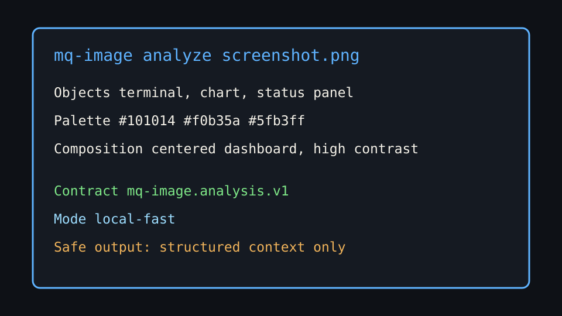

mq-image-analyze
Visual perception layer for the MQ ecosystem. It turns screenshots, diagrams and UI states into structured context for mq-agent and mq-mcp.
mq-image analyze image.jpg --json

Visual perception layer for the MQ ecosystem. It turns screenshots, diagrams and UI states into structured context for mq-agent and mq-mcp.
mq-image analyze image.jpg --json
